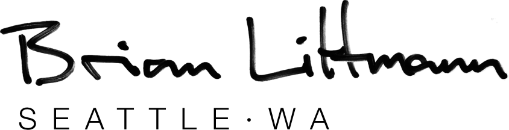
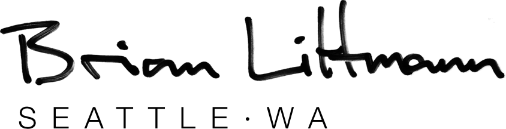
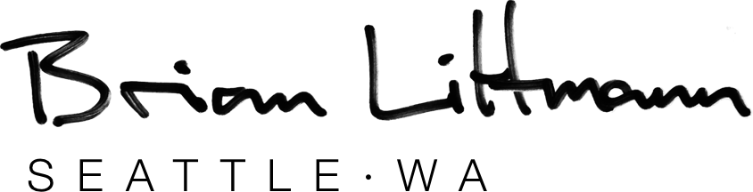
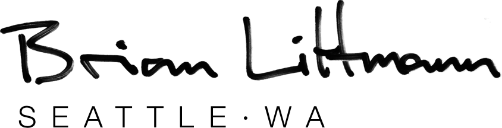
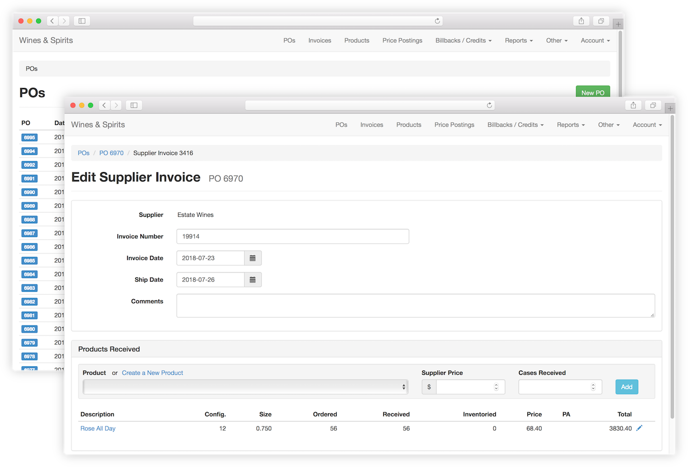
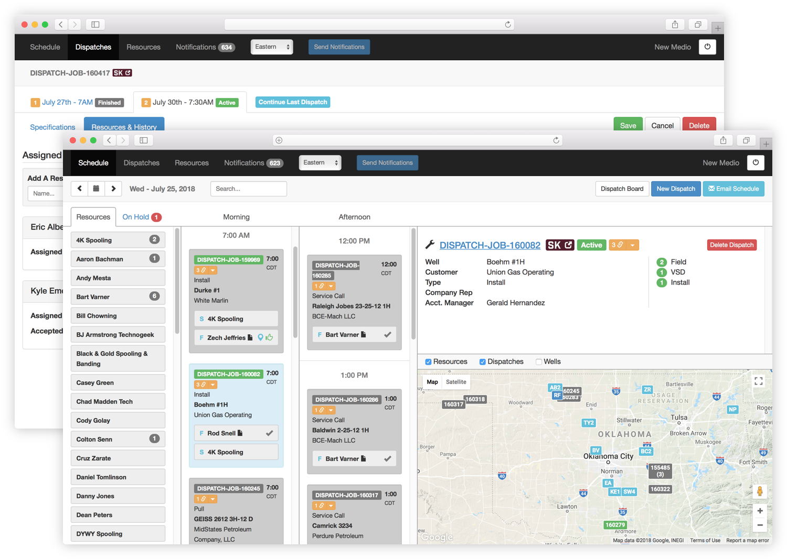
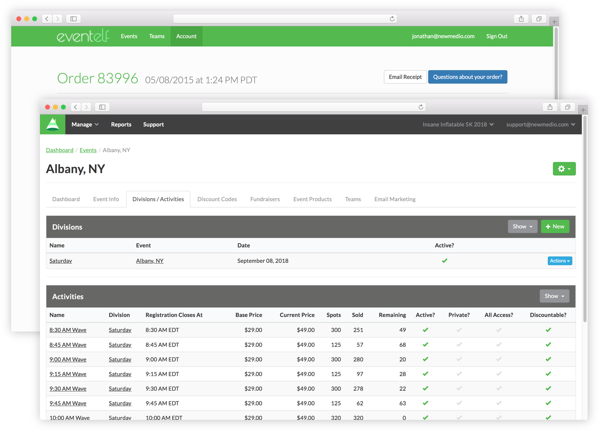
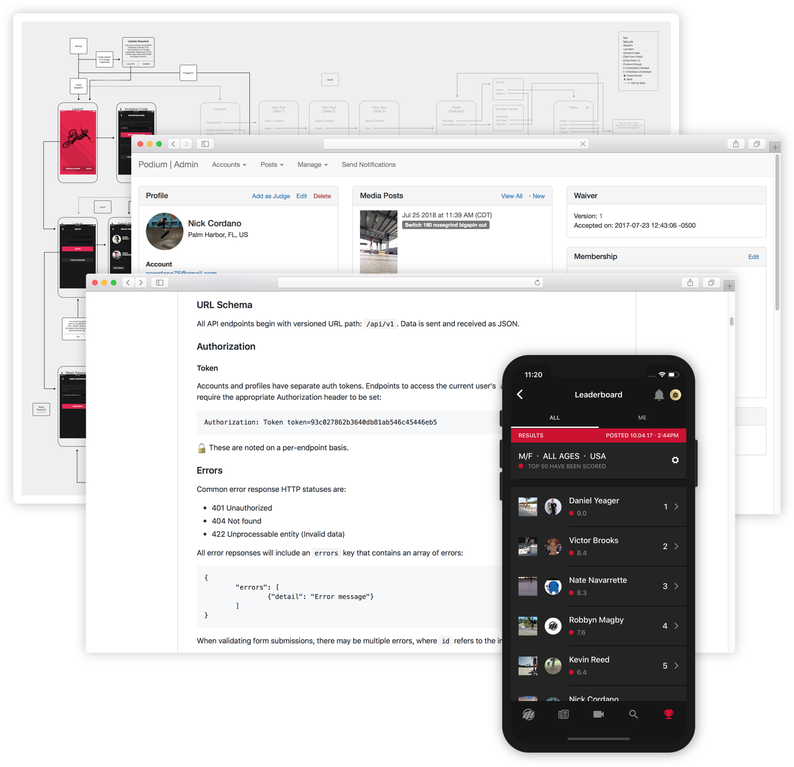
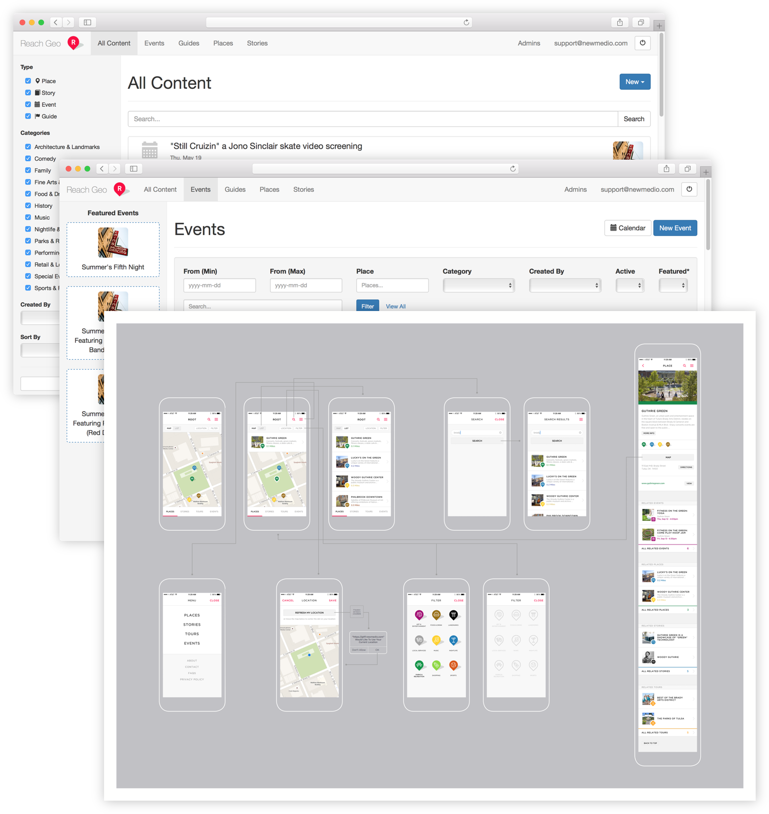

I have a shirt with those words printed on the back. It reminds me of the fulfillment found in choosing the hard work of doing what's right. But perfection is an illusory attainment and I think the reprieve of balance comes when we simply focus on improving.
In addition to philosophical quests, I've been working across the whole stack since 2012 building out the back and front ends of web-based desktop and mobile apps. On a given day I'd like to have asked clients the right questions, written timeless documentation, and made a few pixels happy.
Let's take a look at some of my work below.
Let's TalkNew Medio is where I spent the past six years as the lead developer building custom applications for a number of different clients. Some of these projects were internal company tools while others were consumer facing. Let's start with the former.
A wine and spirits broker approached us asking for an overhaul of their spreadsheet-based purchase order and invoicing system. After many meetings digesting the business logic and tax reporting requirements, I built and delivered the internal Rails application that helps power their business.
Another internal application, this oil and gas company brought us detailed wireframes for a job dispatching application that would interface with an existing MySQL database. I built out the Django-based web app with job management and drag and drop scheduling.
On one of our larger and more collaborative projects, the client wanted to create their own event registration platform. We worked closely with their event coordinators and accounting teams to create the registration flows and meet reporting requirements, then built out many ancillary features such as event day tools, mobile ticketing, order adjustments, and comprehensive event management for company admins.
Podium is breaking ground in the skateboarding scene, providing a way for skaters around the world to compete against each other and earn points that could get them invited to national competitions. At its core, skaters upload their clips and enter them into competitions, which are scored by the community. Finalists are then judged by a panel of pro skaters.
I designed and built the fully tested and documented Rails API including video uploading and encoding through AWS, admin and competition judging areas, and was the lead developer for the Ionic 2 based iOS and Android apps. Check it out on Google Play or the App Store.
 Root Tulsa
Root Tulsa
Root Tulsa is an interconnected geolocation CMS that serves as a guide to life in Tulsa for both locals and visitors featuring places and events nearby. Working with the client to refine the initial vision, we started with a native iOS app backed by a Rails API along with a mobile web frontend.
I was the lead architect and developer for the API backend, original mobile web app, and admin CMS. Many revisions to the app were made, including support for recurring events, and the project as continued to evolve since my last involvement.
